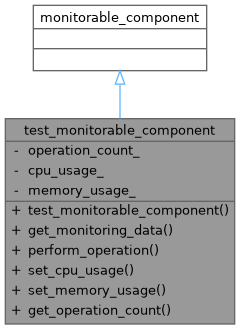

Inheritance diagram for test_monitorable_component:

Collaboration diagram for test_monitorable_component:

Public Member Functions | |
| test_monitorable_component (const std::string &id) | |
| result< monitoring_data > | get_monitoring_data () const override |
| void | perform_operation () |
| void | set_cpu_usage (double usage) |
| void | set_memory_usage (double usage) |
| int | get_operation_count () const |
Private Attributes | |
| std::atomic< int > | operation_count_ {0} |
| std::atomic< double > | cpu_usage_ {0.0} |
| std::atomic< double > | memory_usage_ {0.0} |
Detailed Description
Test implementation of monitorable_interface
Definition at line 23 of file test_monitorable_interface.cpp.
Constructor & Destructor Documentation
◆ test_monitorable_component()
|
inlineexplicit |
Definition at line 30 of file test_monitorable_interface.cpp.
31 : monitorable_component(id) {}
Member Function Documentation
◆ get_monitoring_data()
|
inlineoverride |
Definition at line 33 of file test_monitorable_interface.cpp.
33 {
34 if (!is_monitoring_enabled()) {
35 return make_error<monitoring_data>(
36 monitoring_error_code::monitoring_disabled,
37 "Monitoring is disabled for this component"
38 );
39 }
40
41 monitoring_data data(get_monitoring_id());
42
43 // Add metrics
47
48 // Add tags
49 data.add_tag("component_type", "test");
50 data.add_tag("version", "1.0.0");
51 data.add_tag("status", "running");
52
53 return make_success(std::move(data));
54 }
std::atomic< double > cpu_usage_
Definition test_monitorable_interface.cpp:26
std::atomic< double > memory_usage_
Definition test_monitorable_interface.cpp:27
std::atomic< int > operation_count_
Definition test_monitorable_interface.cpp:25
Here is the caller graph for this function:

◆ get_operation_count()
|
inline |
Definition at line 69 of file test_monitorable_interface.cpp.
Here is the caller graph for this function:

◆ perform_operation()
|
inline |
Definition at line 57 of file test_monitorable_interface.cpp.
Here is the caller graph for this function:

◆ set_cpu_usage()
|
inline |
Definition at line 61 of file test_monitorable_interface.cpp.
Here is the caller graph for this function:
◆ set_memory_usage()
|
inline |
Definition at line 65 of file test_monitorable_interface.cpp.
Here is the caller graph for this function:

Member Data Documentation
◆ cpu_usage_
|
private |
Definition at line 26 of file test_monitorable_interface.cpp.
26{0.0};
◆ memory_usage_
|
private |
Definition at line 27 of file test_monitorable_interface.cpp.
27{0.0};
◆ operation_count_
|
private |
Definition at line 25 of file test_monitorable_interface.cpp.
25{0};
The documentation for this class was generated from the following file: